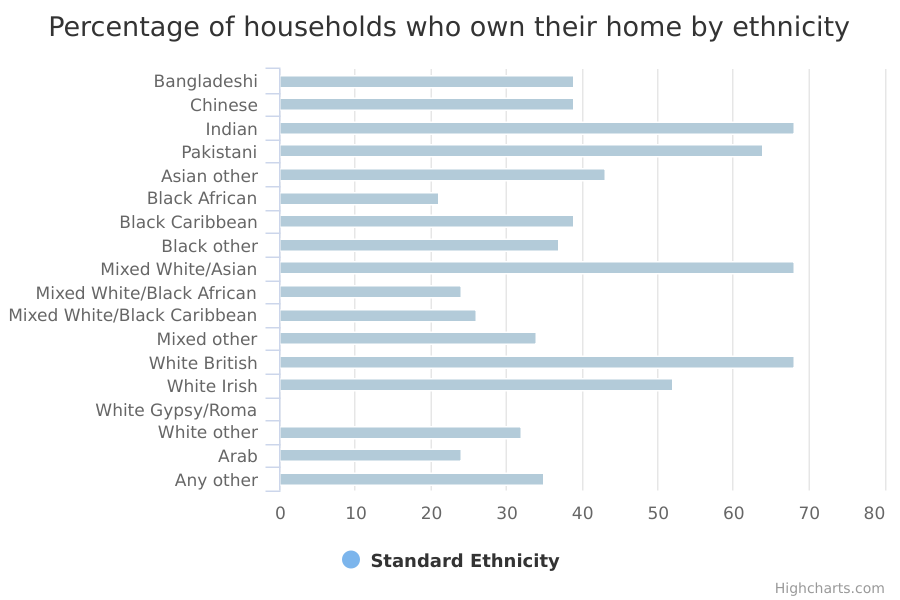
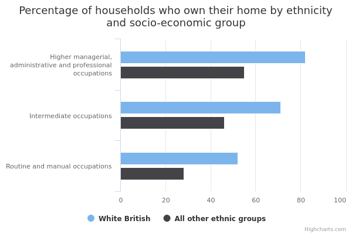
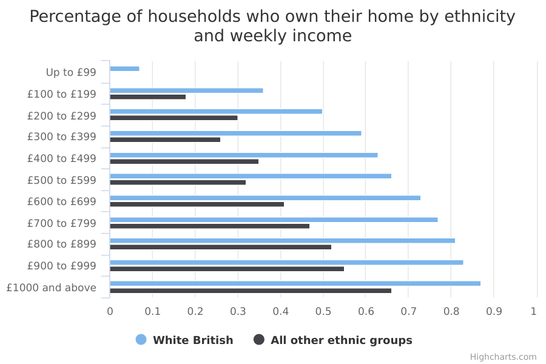
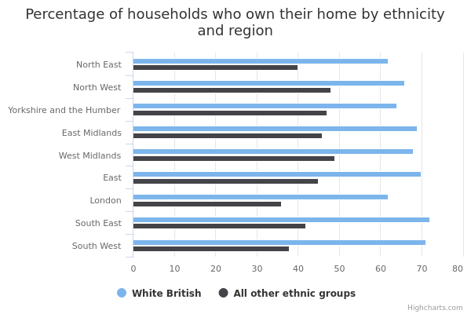
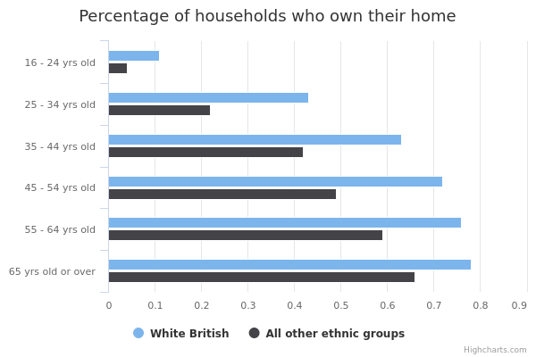

Home ownership
The main facts and figures show that:
-
14.3 million (63%) of the estimated 22 million households in England in 2015/16 were in home ownership
-
ethnic minority householders were less likely to be in owner-occupation than White British households – except for Indian, Mixed White and Asian and Pakistani households who have similar rates of home ownership
-
when comparing White British households with all other ethnic groups - across every socio-economic group, income band, region and age group - White British households were more likely to own their own homes
Things you need to know
Compared to White groups, people from an ethnic minority background tend to be younger, resident in England for a shorter time and located in urban areas. They are also likely to live in larger households. This may explain differences in levels of home ownership.
To ensure that there is a large enough number of ethnic minority households to produce reliable findings, the data is drawn from the English Housing Survey (EHS) 2014/15 and 2015/16.
Information about households available from the EHS Headline and Annual Reports is normally based on a 12-month period (April to March) of the survey, so some of the statistics cited here may not match those in the Headline and Annual Reports.
The commentary has focused on findings based on subgroups of at least 30 households to ensure that we report reliable findings.
The number of Gypsies and Irish travellers interviewed is very small. To avoid disclosing personal information about individuals in those groups, information about them is not presented in some of the tables or charts.
The EHS is a ‘sample survey’: it collects information from a random sample of the population to make generalisations (reach 'findings’) about the total population.
For example, EHS findings might include the percentage of households who get help from their family to buy their own home.
The commentary for this data only includes reliable, or ‘statistically significant’, findings.
Findings are statistically significant when we can be confident that they can be repeated, and are reflective of the total population rather than just the survey sample.
Specifically, the statistical tests used mean we can be confident that if we carried out the same survey on different random samples of the population, 19 times out of 20 we would get similar findings.
What the data measures
This data measures how likely people in different ethnic groups are to own their own homes.
The figures are drawn from the 2014/15 and 2015/16 English Housing Survey (EHS). The survey involves face-to-face interviews with about 13,300 randomly selected households every year.
These are used to make estimates for the 22 million households in England as a whole.
The EHS is a national survey of people's housing circumstances and the condition and energy efficiency of homes in England.
The information relates to households. A household is one person or a group of people (not necessarily related) who have the accommodation as their only or main residence, and (for a group) share cooking facilities and share a living room or sitting room or dining area.
The EHS has ethnicity information on the household reference person as well as all other members of the household. The household reference person is the person in whose name the dwelling is owned or rented or who is otherwise responsible for the accommodation.
Some households contain people from different ethnic backgrounds; in these circumstances, we have used the ethnic background of the household reference person to define the ethnic background of the household.
Nearly all the household reference persons – more than 99.8% interviewed – provided information on their ethnicity.
The data is shown for the nine regions of England: North East, North West, Yorkshire & Humberside, East Midlands, West Midlands, East, London, South East and the South West.
Why these ethnic categories were chosen
For comparisons made at national level, this data uses the standardised ethnic groups based on the 2011 census.
White:
- English/Welsh/Scottish/Northern Irish/British
- Irish
- Gypsy, Traveller or Irish Traveller
- Any other White background
Mixed/Multiple ethnic groups:
- White and Black Caribbean
- White and Black African
- White and Asian
- Any other Mixed/Multiple ethnic background
Asian/Asian British:
- Indian
- Pakistani
- Bangladeshi
- Chinese
- Any other Asian background
Black/African/Caribbean/Black British:
- African
- Caribbean
- Any other Black/African/Caribbean background
Other ethnic group:
- Arab
- Any other ethnic group
For data analysed both by ethnicity and by socio-economic group , income, region and age the following binary category has been used:
- White British and Other – White British people compared with all other groups (including White ethnic minorities and all other ethnic minorities)
This is because the number of people that were surveyed to generate estimates for the population as a whole becomes too small to be reliable when broken down both by ethnicity (in either detailed or broad categories) and by another factor like socio-economic group or income.
Data is therefore grouped to a size where estimates become reliable. In this case, information broken down by ethnicity and another factor compares White British with Other.
Home ownership by ethnicity

Percentage and number of households who own their own home by ethnicity
| Asian | |||
|---|---|---|---|
| Bangladeshi | 39 | 38,000 | 98,000 |
| Chinese | 39 | 50,000 | 129,000 |
| Indian | 68 | 342,000 | 504,000 |
| Pakistani | 64 | 212,000 | 333,000 |
| Asian other | 43 | 93,000 | 218,000 |
| Black | |||
| Black African | 21 | 78,000 | 368,000 |
| Black Caribbean | 39 | 112,000 | 289,000 |
| Black other | 37 | 14,000 | 38,000 |
| Mixed | |||
| Mixed White/Asian | 68 | 45,000 | 66,000 |
| Mixed White/Black African | 24 | 19,000 | 80,000 |
| Mixed White/Black Caribbean | 26 | 26,000 | 99,000 |
| Mixed other | 34 | 11,000 | 32,000 |
| White | |||
| White British | 68 | 12,733,000 | 18,808,000 |
| White Irish | 52 | 96,000 | 184,000 |
| White Gypsy/Roma | withheld because a small sample size makes it unreliable | withheld because a small sample size makes it unreliable | withheld because a small sample size makes it unreliable |
| White other | 32 | 341,000 | 1,078,000 |
| Other | |||
| Arab | 24 | 15,000 | 63,000 |
| Any other | 35 | 79,000 | 227,000 |
Summary
This data shows that:
-
in 2015/16, 63% of householders in England were homeowners, either because they owned their home outright or were buying it with a mortgage – around 14.3 million households
-
68% of White British households were in owner-occupation
-
Indian, Mixed White and Asian and Pakistani households had similar rates of home ownership to White British households with rates of 68%, 68% and 64% respectively
-
Black African, Arab, and Mixed White and Black African households had the lowest rates of home ownership, with rates of 21%, 24% and 24% respectively
Download image and data
Home ownership by ethnicity and socio-economic group

Percentage and number of households who own their home by ethnicity and socio-economic group
| White British | All other ethnic groups | |||||
| Higher managerial, administrative and professional occupations | 82 | 6,225,042 | 7,635,539 | 55 | 771,276 | 1,400,849 |
|---|---|---|---|---|---|---|
| Intermediate occupations | 71 | 2,752,630 | 3,857,408 | 46 | 321,335 | 702,682 |
| Routine and manual occupations | 52 | 3,259,537 | 6,260,530 | 28 | 372,500 | 1,311,313 |
Summary
This data shows that:
- in every socio-economic group of England, White British households were more likely to be in home ownership than all ethnic minority households
Download image and data
Home ownership by ethnicity and weekly income

Percentage and number of households who own their home by ethnicity and income
| White British | All other ethnic groups | |||||
| Up to £99 | 7 | 13,026 | 183,039 | 0 | 0 | 64,744 |
|---|---|---|---|---|---|---|
| £100 to £199 | 36 | 588,678 | 1,623,813 | 18 | 58,791 | 319,019 |
| £200 to £299 | 50 | 1,148,278 | 2,290,104 | 30 | 116,474 | 382,066 |
| £300 to £399 | 59 | 1,241,118 | 2,121,559 | 26 | 129,777 | 490,875 |
| £400 to £499 | 63 | 1,133,141 | 1,793,046 | 35 | 140,797 | 399,204 |
| £500 to £599 | 66 | 1,090,733 | 1,641,076 | 32 | 110,654 | 343,358 |
| £600 to £699 | 73 | 1,111,534 | 1,521,753 | 41 | 129,579 | 312,920 |
| £700 to £799 | 77 | 955,013 | 1,234,900 | 47 | 124,852 | 266,681 |
| £800 to £899 | 81 | 887,284 | 1,099,098 | 52 | 110,086 | 209,729 |
| £900 to £999 | 83 | 728,261 | 875,735 | 55 | 104,294 | 188,360 |
| £1000 and above | 87 | 3,835,807 | 4,424,028 | 66 | 547,689 | 831,408 |
Summary
This data shows that:
- in every income band, White British households were more likely to be in home ownership than ethnic minorities
Download image and data
Home ownership by ethnicity and area

Percentage and number of households who own their home by ethnicity and region
| White British | All other ethnic groups | |||||
| North East | 62 | 669,965 | 1,082,079 | 40 | 24,025 | 60,660 |
|---|---|---|---|---|---|---|
| North West | 66 | 1,800,777 | 2,726,087 | 48 | 159,479 | 332,876 |
| Yorkshire and The Humber | 64 | 1,277,607 | 1,993,215 | 47 | 117,953 | 251,038 |
| East Midlands | 69 | 1,190,589 | 1,716,315 | 46 | 102,383 | 223,700 |
| West Midlands | 68 | 1,336,007 | 1,973,387 | 49 | 174,503 | 355,356 |
| East of England | 70 | 1,522,381 | 2,179,257 | 45 | 143,253 | 316,271 |
| London | 62 | 1,062,188 | 1,721,643 | 36 | 582,810 | 1,615,633 |
| South East | 72 | 2,300,230 | 3,196,339 | 42 | 207,876 | 492,775 |
| South West | 71 | 1,573,674 | 2,220,374 | 38 | 60,712 | 160,054 |
Summary
This data shows that:
- in every region of England, White British households were more likely to be in home ownership than all ethnic minority households
Download image and data
Home ownership by ethnicity and age

Percentage and number of households who own their home by ethnicity and age
| White British | All other ethnic groups | |||||
| 16 - 24 yrs old | 11 | 61,204 | 547,604 | 4 | 9,175 | 209,064 |
|---|---|---|---|---|---|---|
| 25 - 34 yrs old | 43 | 1,037,801 | 2,400,150 | 22 | 194,540 | 888,814 |
| 35 - 44 yrs old | 63 | 1,839,610 | 2,909,500 | 42 | 435,264 | 1,043,931 |
| 45 - 54 yrs old | 72 | 2,689,665 | 3,746,787 | 49 | 387,692 | 795,069 |
| 55 - 64 yrs old | 76 | 2,449,380 | 3,240,797 | 59 | 250,217 | 426,164 |
| 65 yrs old or over | 78 | 4,655,757 | 5,963,859 | 66 | 296,105 | 445,322 |
Summary
This data shows that:
- in every age group, White British households were more likely to be in home ownership than all ethnic minority households
Download image and data
Methodology and data type
Purpose Of Data Source
The English Housing Survey is a continuous national survey commissioned by the Department for Communities and Local Government (DCLG). It collects information about people’s housing circumstances and the condition and energy efficiency of housing in England.
It has 2 components:
- a household interview
- a physical inspection of the dwelling of a sample of the interviewed households
Methodology
Face-to-face interviews with a random sample of about 13,300 households a year.
The dwellings of about 6,000 of the interviewed households are randomly selected to take part in the physical survey element carried out by a qualified surveyor.
In addition, a random sample of around 200 of the dwellings identified by the interviewer as vacant are also included in the physical survey element.
Weights are applied to the sample to produce estimates for the 22 million households in England as a whole.
Data type
Survey
Type of statistic
National Statistics
Suppression rules
Estimates based on less than 30 households have been suppressed to ensure that we report reliable findings. The analysis has been done by binary classification only where broken down by National Statistics Socio-economic Classification (NS-SEC), income, region or age. This prevents small numbers appearing in the table and avoids the potential for identification of individuals.
Disclosure control
The data is deposited in the UK Data Archive (UKDA), after a wide range of disclosure control has been applied.
Strictly disclosure controlled data in the form of derived variables are available under the End-User Licence (e.g. ethnicity is given as white/ethnic minority).
Data sets with some more details are made available under Special Licence after the user has applied to the English Housing Survey Team for access.
Potentially disclosive data, including low-level geography variables (postcode and Lower Layer Super Output Area) are available only through the UKDA Secure Access which requires users to undergo special training, including on disclosure control, before access is given.
Rounding
Estimates in the charts and tables are given to the nearest whole number but more detailed estimates to 1dp are available in the downloads.
Further technical information
Data source details
-
Department for Communities and Local Government
-
7 March 2017
-
7 March 2017
-
1 February 2018
-
Annual
Download the data
home-ownership.csv
This file contains the following: ethnicity, year, geography, age group, NS-SEC (socio-economic group), income, region, value, denominator, numerator and sample size
View this page as JSON